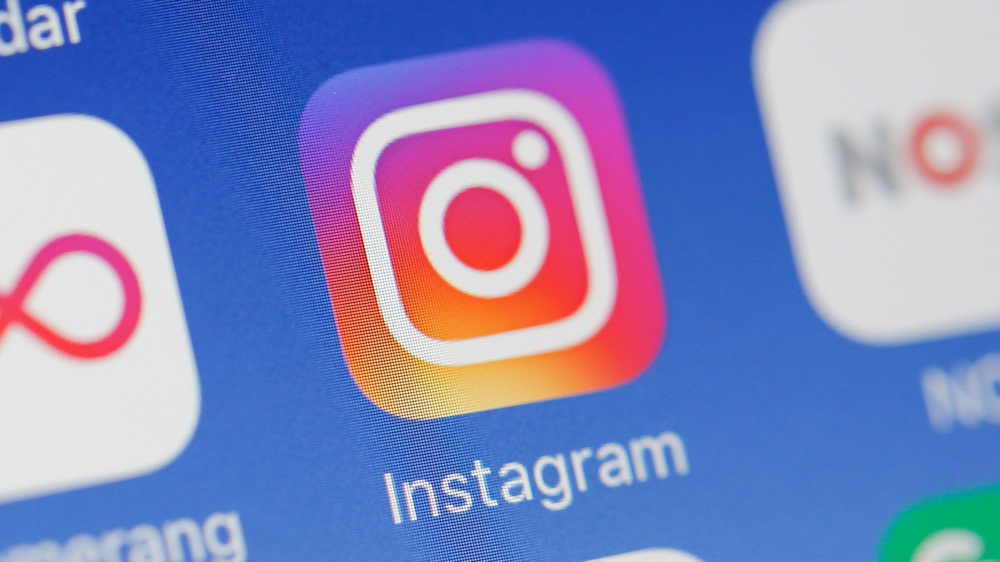

In our generation, social media has become one of the main sources of communication for humans all around the globe. Over the years we have seen some new attempts or iterations of social media, but many have fallen off (i.e. MySpace, MSN) or other platforms have taken over. For example, Tiktok took the concept of Vine and recreated a similar platform and has made great success with 680 million active users as of November 2018. Other social media platforms such as Facebook, Instagram and Twitter have remained at the top for several years now. Throughout this webpage, we will be discussing the pros and cons Instagram and Tiktok. Brian will be arguing for Instagram and Artem will argue for Tiktok.
Instagram has been around ever since they were launched in 2010. It has become the #1 photo sharing platform over the past several years with consistent positive changes. One of the biggest announcements Instagram did back in 2012 was merging with Facebook. Mark Zuckerberg saw the Instagram as a future potential threat. He would further pursue more acquisitions in 2014 by buying WhatsApp. Ever since then, Instagram continued to grow in popularity throughout the years playing a major part of competition for other platforms such as Snapchat. With the recent rise of Tiktok, it seems Zuckerberg is now faced with more competitors. However, with Tiktok being relatively new, Instagram is still the larger audience with 1.8 billion having at least downloaded it. Although Tiktok has reached 1.5B downloads (2019) within such a short amount of time, we should consider the COVID-19 outbreak for it is possible rise in popularity. The longevity of Tiktok is also questionable. Similarly, Vine had produced a platform of the same concept back in 2012 however was later discontinued by Twitter due to monetization issues. With Tiktok being a newcomer to the market, it is unsure of how well they can actually keep up when compared to Instagram which has been established as one of the main sources.
When comparing the two in terms of what they offer, Instagram offers a photo sharing service among friends and followers while Tiktok offers short clips ranging from dancing to acting skits and more. Due to this, the content consumption of Tiktok is way to fast and the semantic load of the content falls. It is rise in popularity has also created a contrast of many unentertaining clips with people posting almost anything (as long as it meets the TOS) in attempts to gain internet fame even if it’s completely unentertaining. You could say the same for Instagram, but I think Instagram does a better job at maintaining what you see as it bases it algorithm off who you follow or accounts you view the most so your feed is usually photos of people you enjoy seeing. Another disadvantage of Tiktok is the audience. The main audience for people using Tiktok are kids so you see the same issue that happened with Vine where ads cannot be played due to the children. This is extremely different from Instagram where “influencers” are able to make money through sponsors and posting photos. Overall, Instagram is just a more complete social media platform in my opinion. With the ability for those to create careers off photos, it is also just much more attractive to someone looking to use a social media platform. The UI is also much more clean and with the audience being children, there is a high possibility Tiktok falls off similarly to Vine overtime.